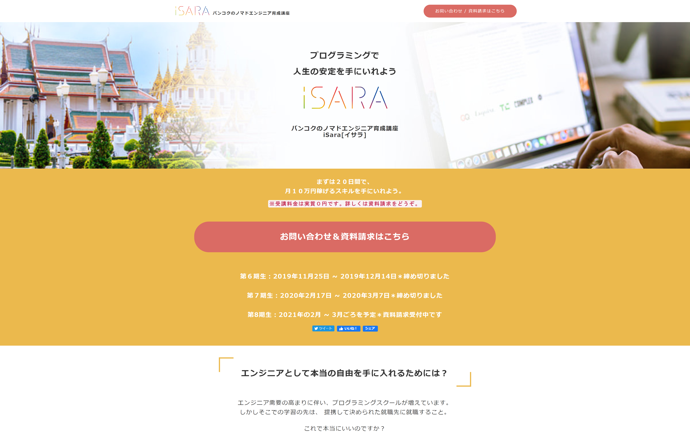
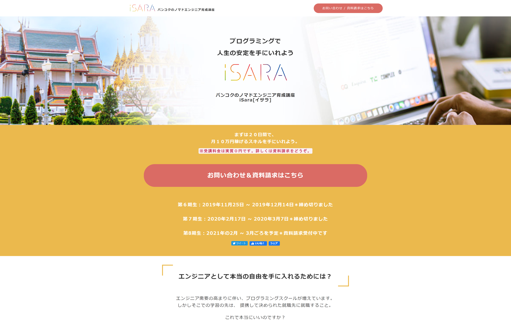
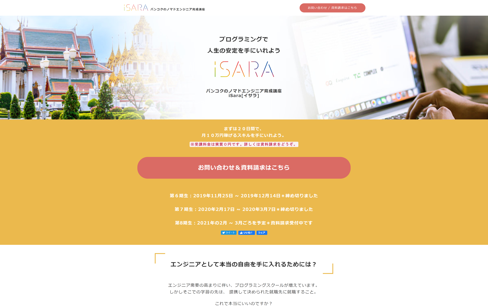

workout
以下は、制作物の一部です。
.png)
.png) 

田村翔(Sho Tamura)
1999年生まれ東京出身ロンドン育ち
慶應義塾大学在学中
Freestyle Basketballer兼Engineer
ITベンチャーでエンジニアの長期インターンをしています。
半年前から学習を始め、簡単なサイトを作成できます。ポートフォリオを作成した後、模写コーディング中です。レスポンシブ対応可能です。
簡単なゲームを作ることができます。また、サイトに動きをつけることができます。現在、ドットインストールで集中的に学習中です。
削除、更新、検索、ログインなど基本的な機能を実装することができます。自作のCLOUDサービスを作成しました。
WordPressを使って、自分が所属しているサークルのホームページを作成しました。メンテナンス、プラグインの設置など多岐に渡り知識があります。
2021年2月、大学生日本一決定戦に出場しました。
この大会では最初にオーディションを行い、トーナメントに出場するメンバーを決定します。
私はオーディションを突破し、ベスト８まで勝ち残りました。
2020年8月から、不動産会社の業務効率化を担うCLOUDサービスを提供しているITベンチャー「いえらぶGROUP」でインターンを始めました。
エンジニア未経験であったため、実務経験を通じてエンジニアとしてのスキルや姿勢を学びたいという想いでインターンを始めました。
最初は開発環境構築から取り掛かり, HTML&CSS,JS,PHP,SQLの基本的なスキルを学び、そして実際に使うことで徐々に習得していきました。
このインターンでの大きな学びは、システム開発の基本的なフローや,独学では得ることが難しい「現場の空気感」を体感できたことです。
インターンが終わった後は、もっと技術力を磨いて高度な案件にも対処できるように、アルバイトとして同企業で働きます。
以下は、制作物の一部です。

サークル内大会優勝
大学２年生の夏、サークル内の大会で優勝という結果を出しました。
サークル史上初めて、2年生として優勝しました。
私は大学１年の冬、大会でベスト４以上の結果を残すという高い目標を設定しました。
その目標を達成するために、人一倍練習を積み重ね、日々の練習の記録を続けました。
そして、優勝という目標以上の結果を達成し、大きな自信に繋がりました。